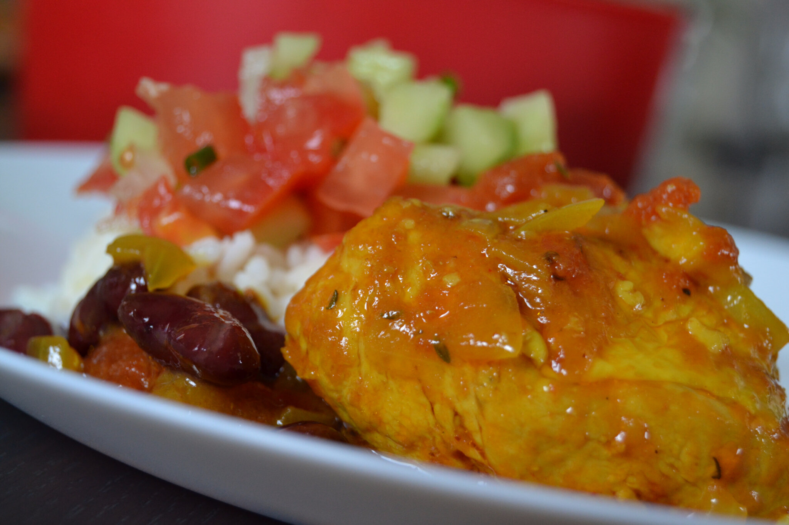
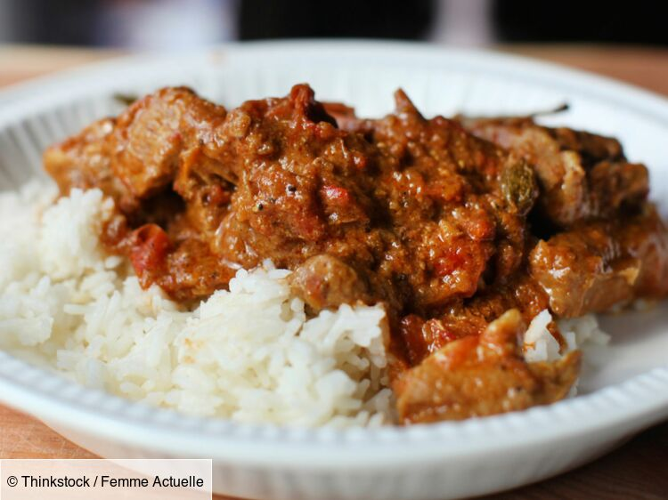

Cuisine Créole
NOS MENUS
-

Rougail saucisse
Découvrez la recette du Rougail saucisses réunionnais, spécialité créole relevée et généreuse qui sent bon la Réunion.
Voir recette -

Carry Poulet
Manger avec du riz, des grains et un bon petit rougail mangue pimenté bien sûr...
Voir recette -

Cabry massalé
Plat d'origine mauricienne, le cabri se consomme le plus traditionnellement lors de cérémonies tamoules.
Voir recette